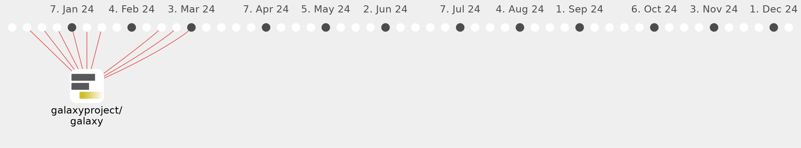

heisner-tillman

Commits all-time: 359
Commits last year: 125

(125)
- ee62542
- 694213a
- f36ca50
- 1db9c2e
- 9b76ae9
- ebe4382
- 0741ddc
- dd33939
- a8c7d77
- 34f68e6
- e1e19d9
- 7048f9f
- a1d1069
- c006311
- 35a7895
- f296e45
- cf7f6c9
- 3785b80
- 9ae76e7
- 850818e
- 9b2435e
- c83c4f1
- 04a9df0
- 8130610
- 1620605
- 88ceb74
- f36fd8f
- ce68822
- 1b9d632
- 264e423
- 9eecaef
- c1d5a62
- 2d09d0d
- e4cd8a3
- 6d45249
- 416d629
- d7a81bb
- ac2c3b2
- 8a1604e
- 687b65c
- 714011e
- dd8269a
- cdc9a94
- 975a070
- d1ef383
- fa9e021
- 101505e
- 7a50e8b
- f0c34d1
- bf9d1f5
- 7195af8
- 11a5b8a
- e02eee5
- 5a8a89a
- 48b355f
- 44d909a
- 0d375fd
- 7719c5b
- ac7e7a8
- bd42cd0
- 1f561c3
- ff8b7cd
- b6186cc
- d9b663d
- 2bfca31
- d1487e9
- fa69fd1
- 03a04c0
- 222f364
- 409ee08
- 52958a3
- 90d833a
- 6ec9013
- 1876361
- 3beb2f9
- 06505d0
- 9afa0a2
- 87b6bed
- 3f9d8f6
- 28aaac6
- 22a260b
- f9c847f
- d6bff71
- dcd2167
- 8bbfc77
- a240e38
- 364ec7a
- f319eb1
- 4aa2f74
- a8b35eb
- 3a31dcd
- 6e71cee
- c4d6031
- 36751dc
- 2a39866
- 4e585aa
- bd7dca7
- cab6227
- 5ae614a
- 1897dc2
- 4e1fda9
- 92855f6
- a9276a1
- 141e5f5
- f3ffc33
- b2fd59d
- 66e0b6c
- a86661d
- f91dd97
- c18366a
- a8ee9c5
- c01ff2c
- e9d28d6
- 6ff8f45
- 65da13b
- 78725fb
- 80110bd
- 362d245
- b82ed24
- 393ffc6
- 9345085
- 5400f74
- 6c1f30e
- bc705a2
- 1aa27cb